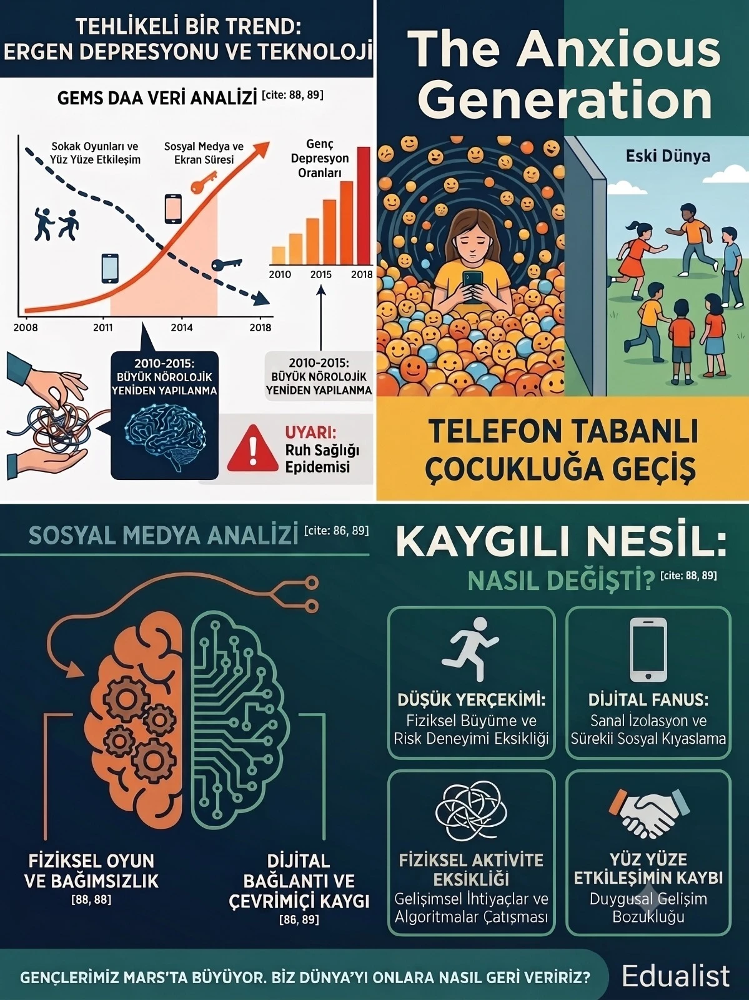

Dijital Çağda Ergen Ruh Sağlığı ve Kaygılı Nesil
Jonathan Haidt'in The Anxious Generation (Kaygılı Nesil) kitabını GEMS DAA okul psikolojik danışmanımızla birlikte okuyoruz. Bu serimizin ilk yazısında kitabın "Mars'ta Büyümek" metaforunu ve 2010-2015 yılları arasında ergen ruh sağlığında yaşanan dramatik bozulmayı ele alıyoruz. Z kuşağı neden farklı? Dijital çağın dört gelişimsel hasarı neler? Ve ebeveyn olarak ne yapabiliriz?
Giriş: Eğitimde Yeni Bir Farkındalık Yolculuğu
Eğitim dünyasındaki gelişmeleri yakından takip edenler bilir; çocuklarımızın ve gençlerimizin ruh sağlığı son on yılda eşine az rastlanır bir krizden geçiyor. Bizler de GEMS DAA (Dubai American Academy) bünyesinde, okul psikolojik danışmanımızla birlikte bu konuya mercek tutmak istedik. Son dönemin en çok ses getiren kitaplarından biri olan, Jonathan Haidt imzalı The Anxious Generation (Kaygılı Nesil) kitabını bölüm bölüm okuyarak derinlemesine bir analiz sürecine girdik.
Elde ettiğimiz bu değerli içgörüleri eğitimcilere, ebeveynlere ve gençleri anlamak isteyen herkese ulaştırmak amacıyla Edualist'te bir yazı dizisi hazırlamaya karar verdik. Serimizin bu ilk yazısında, kitabın hepimizi sarsan giriş bölümünü ele alıyoruz: "Mars'ta Büyümek" ve dijital çağın getirdiği radikal dönüşümler.

Neden Mars? Çarpıcı Bir Düşünce Deneyi
Jonathan Haidt, kitaba başlarken okuyucuyu zihinsel bir yolculuğa, rahatsız edici bir düşünce deneyine çıkarıyor. Bir an için çocuklarınızı alıp Mars'ta kurulan yeni bir koloniye taşındığınızı hayal edin. Bu yeni gezegende yerçekimi çok zayıf, nefes alabileceğiniz doğal bir atmosfer yok, her şey insan eliyle yapılmış kapalı fanusların içinde gerçekleşiyor. İnsan biyolojisinin yüz binlerce yıldır hiç alışık olmadığı bu yapay ortamda çocuklarınızın fiziksel, zihinsel ve ruhsal gelişimi nasıl etkilenirdi? Kemikleri o düşük yerçekiminde yeterince güçlenir miydi?
Haidt'in bu metaforu seçmesinin çok temel bir nedeni var: Z kuşağı, mecazi anlamda Dünya'da değil, "Mars'ta" büyüyen ilk nesil. İnsan beyni ve bedeni milyonlarca yıllık evrimsel bir sürecin ürünüdür. Çocuklar ve ergenler, belirli gelişimsel deneyimlere — fiziksel risk, yüz yüze sosyal etkileşim, serbest oyun, doğayla temas — maruz kalarak sağlıklı büyümek üzere programlanmıştır. Bu deneyimler ortadan kalktığında ya da dijital muadilleriyle ikame edildiğinde, beyin ve ruh gelişimi Mars'taki düşük yerçekiminde kemikler gibi zarar görür.
Serbest Oyundan Telefon Merkezli Yaşama Geçiş
Kitabın temel tezi aslında yaşanan süreci çok net özetliyor. 2010'ların başından itibaren çocukluğun doğasında insanlık tarihinde görülmemiş bir değişim yaşandı. Binlerce yıldır çocuklar "serbest oyun" kavramı etrafında şekillenen bir dünyada büyüdüler. Geleneksel yüz yüze arkadaşlıkların kurulduğu, sokaklarda koşup düştükleri, kendi aralarında çatışma çözmeyi öğrendikleri ve fiziksel aktivite ile beslendikleri bir çocukluktu bu.
Sokakta koşmak, ağaçtan düşmek, bir arkadaşıyla kavga edip barışmak — bunlar gereksiz riskler değil, gelişimin temel taşlarıydı. Çocuk bir dizini sıyırıp acıyı hissedince bir sonraki seferde daha dikkatli tırmanmayı öğreniyor. Bir çatışmayı yetişkin müdahalesi olmadan çözdüğünde sosyal zekâsı gelişiyor. Sıkılmak bile faydalıydı — yaratıcılığın, hayal gücünün ve iç dünya keşfinin kapısıydı sıkılmak.
Ancak akıllı telefonların hayatımızın merkezine yerleşmesi ve çevrimiçi olma halinin süreklilik kazanmasıyla her şey değişti. Çocuklar, gerçek dünyadan koparılıp "telefon merkezli" bir sanal evrene göç ettiler. İşte Haidt'in bahsettiği "Mars" burasıdır.
2010–2015: Büyük Yeniden Kablolanma ve Artan Kaygı
GEMS DAA'daki tartışmalarımızda en çok üzerinde durduğumuz nokta, verilerin ne kadar net ve ürkütücü olduğuydu. Kitap, özellikle 2010 ile 2015 yılları arasında yaşanan döneme dikkat çekiyor. Sosyal medya kullanımının ve ekran süresinin katlanarak artmasıyla birlikte, ergenlerde depresyon belirtilerinin görülme oranında muazzam bir artış yaşandı.
Haidt ve ekibinin incelediği veriler açıktı: Bu dönemde, özellikle 12–17 yaş aralığındaki kız ergenlerde klinik düzeyde depresyon oranları %50'nin üzerinde arttı. Kaygı bozuklukları, kendine zarar verme vakaları ve intihar düşünceleri de aynı dönemde benzer bir tırmanış gösterdi. Bu artışın salt olarak ekonomik kriz, akademik baskı veya aile sorunlarıyla açıklanamayacağını veriler ortaya koyuyordu. Küresel ölçekte aynı anda, aynı yaş grubunda görülen bu eş zamanlı çöküşün en tutarlı açıklaması tek bir değişkendi: akıllı telefonların yaygınlaşması ve sosyal medyanın ergen yaşamının merkezine yerleşmesi.
Haidt'in kullandığı "Büyük Yeniden Kablolanma" (Great Rewiring) kavramı tam olarak bu dönemi tanımlıyor: Binlerce yıldır neredeyse hiç değişmeyen çocukluğun, birkaç yıl içinde kökten dönüştürüldüğü, ve bu dönüşümün bedelinin henüz tam anlamıyla anlaşılamadığı bir dönem.
Dijital Geçişin Dört Gelişimsel Hasarı
GEMS DAA'daki okul psikolojik danışmanımızla bu bölümü tartışırken, kitabın ortaya koyduğu dört temel hasar alanını kendi gözlemlerimizle karşılaştırdık. Haidt'in çerçevesi, infografiğimizde de özetlediğimiz şu dört başlık altında toplanıyor:
1. "Düşük Yerçekimi" — Fiziksel Risk Deneyiminin Yok Olması
Çocuklar, fiziksel dünyada risk alarak — koşarak, tırmanarak, düşerek — hem bedensel hem de ruhsal dayanıklılıklarını inşa ederler. Bu deneyimler beynde stres tepkisini düzenlemeyi öğretir; çocuk, gerçek dünyada bir zorlukla karşılaştığında paniklemek yerine adapte olmayı öğrenir. Ancak ekran başında geçirilen saatler bu fırsatı ortadan kaldırır. Beyin, hiç deneyimlemediği bir risk yönetimini öğrenememektedir.
Sonuç: Gerçek hayatın en küçük zorluklarına bile aşırı tepki gösteren, "kırılgan" bir ruh hali. Bir sınav başarısızlığı, bir arkadaş çatışması ya da bir eleştiri, bu gençler için katlanılmaz bir yük haline gelebiliyor. Haidt buna "kırılgan çocukluk" (fragile childhood) diyor; ve bu kırılganlığın kökeninde risk deneyiminin yoksunluğu yatıyor.
2. "Dijital Fanus" — Sanal İzolasyon ve Sosyal Kıyaslama Sarmalı
Sosyal medya, görünürde bağlantı vaat ederken aslında tam tersini sunuyor. Ergenler, mükemmelleştirilmiş ve filtrelenmiş yaşamları sürekli olarak kendi gerçeklikleriyle karşılaştırıyor. Instagram'daki bir arkadaşının tatil fotoğrafı, odasında oturan bir ergen için kronik bir yetersizlik hissine dönüşebiliyor. Üstelik bu kıyaslamalar artık 7/24 ve kesintisiz.
Eski dünyada bir ergen okul çıkışında evine gider ve sosyal baskıdan birkaç saatliğine kurtulurdu. Bugün o baskı yatağına kadar takip ediyor. Gece yarısı gelen bir yorum, sabah 3'te açılan bir hikaye — beyni sürekli sosyal tehdit modunda tutan bir uyarıcı seli. Danışmanımız bu örüntüyü "kapatılamayan açık döngü" olarak tanımlıyor.
3. Fiziksel Aktivite Eksikliği — Gelişimsel İhtiyaçların Karşılanamaması
Haidt'in verileri, ekran süresindeki her artışın fiziksel aktivite süresinde orantılı bir düşüşe karşılık geldiğini gösteriyor. Bu yalnızca bir sağlık sorunu değil; bir gelişim sorunudur. Hareket, beyin için bir lüks değil, bir zorunluluk. Koşmak, zıplamak, spor yapmak — bunların tümü prefrontal korteksin gelişimine, dikkat kapasitesine ve duygusal düzenlemeye doğrudan katkıda bulunuyor.
GEMS DAA'da danışmanımızın gözlemlediği en sık örüntülerden biri şu: Dikkat güçlüğü ve duygusal düzensizlik yaşayan öğrencilerin büyük çoğunluğu, aynı zamanda düşük fiziksel aktivite düzeyine sahip. Bu bir tesadüf değil; bir korelasyon. Beden hareketsiz kaldığında zihin de sürükleniyor.
4. Yüz Yüze Etkileşimin Kaybı — Duygusal Gelişim Bozukluğu
Empati, bir yüzden duygusal ipuçları okuyarak gelişir. Çatışma çözme, anında sözel ve sözsüz geri bildirim gerektirir. Arkadaşlık, zamanın gerçek dünyada paylaşılmasıyla derinleşir. Bunların tümü, ekran başında kazanılabilecek beceriler değil. WhatsApp mesajları, emojiler ve TikTok yorumları bu ihtiyacı karşılamıyor; yalnızca karşılanıyor izlenimini veriyor.
Sonuç olarak bir nesil, yüz yüze ilişkilerde huzursuz, yalnızlık içinde ama yalnız kalmaktan da ürken gençler olarak büyüyor. Bu çelişki, danışmanımızın en sık karşılaştığı paradoks: "Arkadaşlarım var ama yalnız hissediyorum."
GEMS DAA'da Bunu Nasıl Görüyoruz?
Kitabı okurken, sayfalarda betimlenen tabloyu kendi okulumuzda tanıdık yüzlerle eşleştirdiğimizi fark ettik. Okul psikolojik danışmanımız, son birkaç yılda en sık karşılaştığı vakaların sosyal kaygı, kimlik belirsizliği ve uyku bozuklukları olduğunu paylaşıyor. Bu üçü birbirinden bağımsız değil; sosyal medyaya geç saatlere kadar maruz kalan bir ergen, hem uyku kalitesini yitiriyor hem de gece boyunca aldığı olumsuz sosyal karşılaştırmalar nedeniyle sabah okula geldiğinde kronik bir kaygı yüküyle başlıyor güne.
Bir diğer gözlem: Öğrencilerin yüz yüze sosyal becerileri giderek zayıflıyor. Sınıfta bir tartışmayı yönetmek, bir görüş ayrılığını çözmek veya sözlü olarak kendini ifade etmek — bunlar 10 yıl önce daha doğal akan becerilerdi. Bugün bu becerilerin öğretilmesi gerekiyor; artık kendiliğinden gelişmiyor. GEMS DAA olarak bu gözlem, müfredat dışı sosyal-duygusal öğrenme programlarımıza verdiğimiz önemi daha da pekiştirdi. Bu beceriler üzerine çocuğunuzu desteklemek isteyenler için Eduentry sosyal-duygusal gelişim içeriklerine göz atabilirsiniz.
Ebeveynler Olarak Ne Yapabiliriz?
Kitabın bu ilk bölümü bir nevi "teşhis" niteliğinde; çözümler ilerleyen bölümlerde geliyor ve biz de onları serimizin ilerleyen yazılarında ele alacağız. Ancak bu ilk okumadan çıkan birkaç pratik düşünceyi şimdiden paylaşmak istedik:
Serimizin Devamında Ne Var?
The Anxious Generation Serisi'nin ikinci yazısında, Haidt'in kitabın ikinci bölümünde ele aldığı konuya geçeceğiz: Sosyal medya algoritmalarının ergen beyni üzerindeki nörobilimsel etkileri ve "dopamin döngüsü" olarak adlandırılan mekanizma. Kısa devreler yaratan bu sistemi anlamak, hem ebeveynler hem de eğitimciler için kritik öneme sahip.
Ayrıca GEMS DAA'da yürüttüğümüz küçük çaplı anket sonuçlarını da bu seride paylaşacağız. Öğrencilerimizin günlük ekran süresi, sosyal medya kullanım alışkanlıkları ve uyku örüntüleri hakkında topladığımız veriler, Haidt'in tezleriyle ne kadar örtüşüyor? Bir sonraki yazıda göreceğiz.
Çocuğunuzun dijital dünyayla ilişkisini birlikte değerlendirelim
Uluslararası okul sürecinde ruh sağlığı ve adaptasyon desteği için ücretsiz görüşme.
Ücretsiz Görüşme Planla